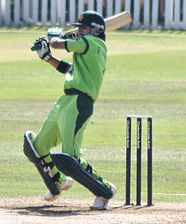

From saeenpedia Free Encyclopedia
Fawad Tariq Alam (Urdu: فواد عالم, born 8 October 1985) is a Pakistani cricketer. He belongs to Karachi and is primarily a left-handed batsman but bowls handy slow left-arm orthodox. He played only 3 test matches wherein he scored 250 runs with an average of 81.33 Alam is a late middle order batsman in domestic cricket but in all 3 test matches he played as an opener and Number 3 batsman.
His father, Tariq Alam, had a long first-class career in Pakistan. Alam currently captains the National Bank of Pakistan cricket team (NBP cricket team) and Pakistan A cricket team. In first class history with respect to Highest Batting Average, he is one of the top 50 batsmen and the only Pakistani to have his name in the list. Currently his rank is 26, however, in 2016 he was among the top 12 batsmen of all time in First Class History.
After Pakistan's disappointing World Cup campaign, Alam was drafted into a 16-man squad for a One Day International series against Sri Lanka in Abu Dhabi. His debut in the 3rd ODI was one to forget, he was caught and bowled by Dilhara Fernando for a first ball duck.
His second One-day International was a better experience, as he contributed 32 unbeaten runs down the order as Pakistan beat India by 31 runs in Jaipur. In between those two matches, he travelled to South Africa as part of Pakistan's squad for the 2007 ICC World Twenty20 tournament. He played in the semi-final, taking two wickets against New Zealand, one a superb caught and bowled effort to dismiss Lou Vincent, as Pakistan progressed to the final, for which he was not selected. In Asia Cricket Cup in June 2008, he scored his maiden half century against Hong Kong. In that match, Pakistan's top order was ripped by Hong Kong bowlers before Fawad and another team mate Sohail Tanvir set up a 100 runs partnership for the 8th wicket. Sohail ended at 59 while Fawad Alam remained unbeaten at 63*. However, he was unexpectedly dropped for the Sri Lanka series in January 2009. In October 2008, he was selected for the quadrangular Twenty20 International tournament to be played in Canada between Sri Lanka, Pakistan, Zimbabwe and hosts Canada In the 4th match of the tournament, he hit 23* from just 8 balls with 3 sixes and supported the captain Shoaib Malik and guided the team to an exclusive victory by the margin of 3 wickets. In that match, he also got the wicket of SHT Kandamby. In the very next match against Zimbabwe, he got 3/7 from 3 overs. In that tournament he got 5 wickets and has proved to be a handy all-rounder. In the final against Sri Lanka, he was dismissed on just 2 runs but he also got 1 wicket in that match.
Alam was picked to play against England in 2010 and wanted to make the most of his opportunity to get picked for the two upcoming tours and then be selected for the 2011 Cricket World Cup. He also stated that he had played a little bit of club cricket in England to help him get used to the english conditions and to train for the tour.[1] Alam scored well in the first two matches but his major break came in the third One-Day International when he increased his top score to 64. He then retained his place for the ODI series against South Africa in the UAE. After scoring 123 runs in the 5 match series, he was subsequently dropped from the ODI team and later that year, lost his place in the T20 team after the tour to New Zealand. Back at first-class cricket, he now captains National Bank of Pakistan. Fawad also has been highest run getter in first-class season of 2012–13. Alam has been the top rated batsman in domestic cricket for the past couple of seasons as per the rankings issued on PCB website.
After being dropped from all formats for three and a half years, his impressive displays domestically (most notably being the top run scorer in the President's One Day Trophy in the season 2013/14) earned him a deserved recall to the national side for the Asia Cup in 2014. His first match after his recall was against the host team Bangladesh, deputising for the injured Sharjeel Khan. He contributed significantly to the team's victory, scoring 74 runs from 70 balls in a competitive chase of 326. He continued his form by scoring his maiden international ODI hundred (114*) against Sri Lanka in the final, rescuing his side from 18/3 to 260/5 with the help of Misbah-ul-Haq and Umar Akmal. His effort was not enough though as Sri Lanka successfully chased the target to become the champions of the 2014 Asia Cup.[2]